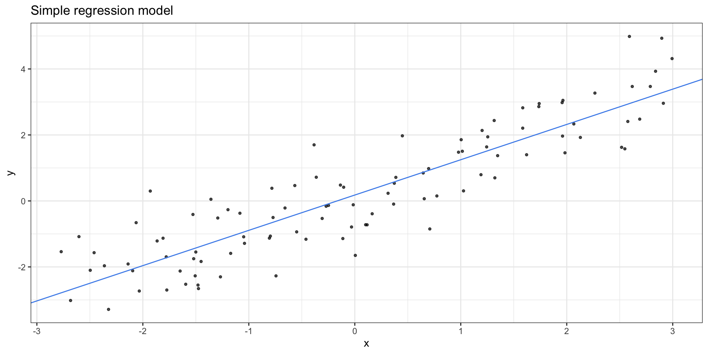
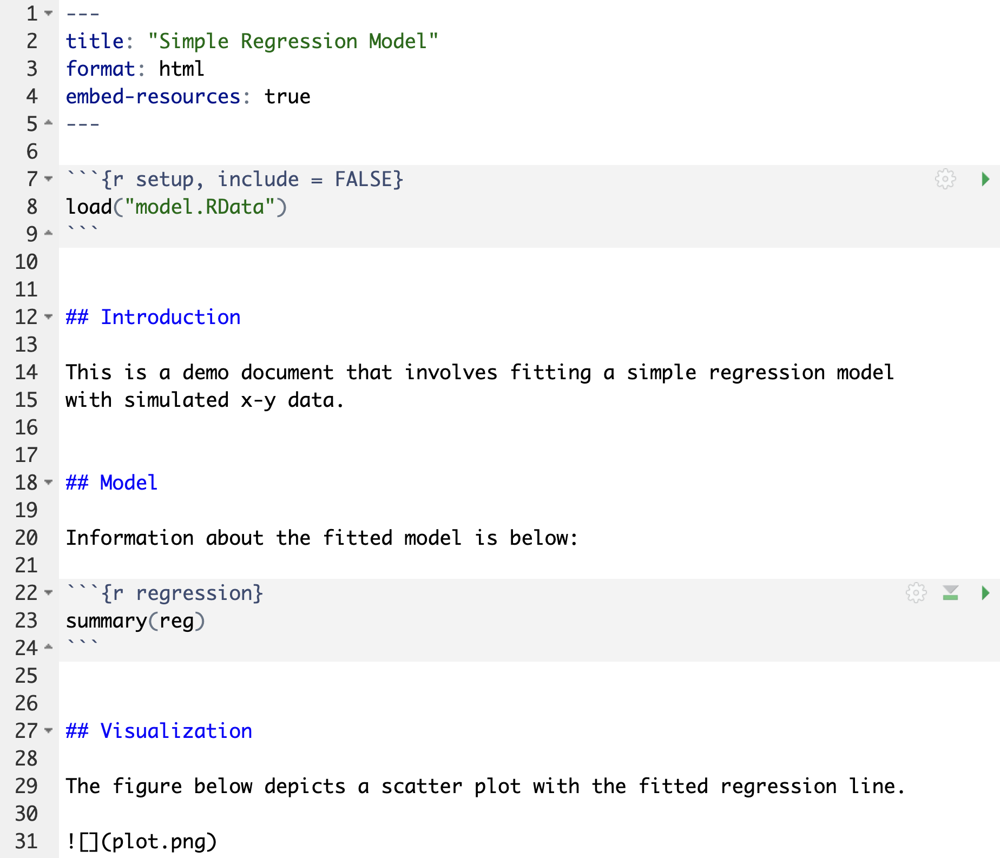
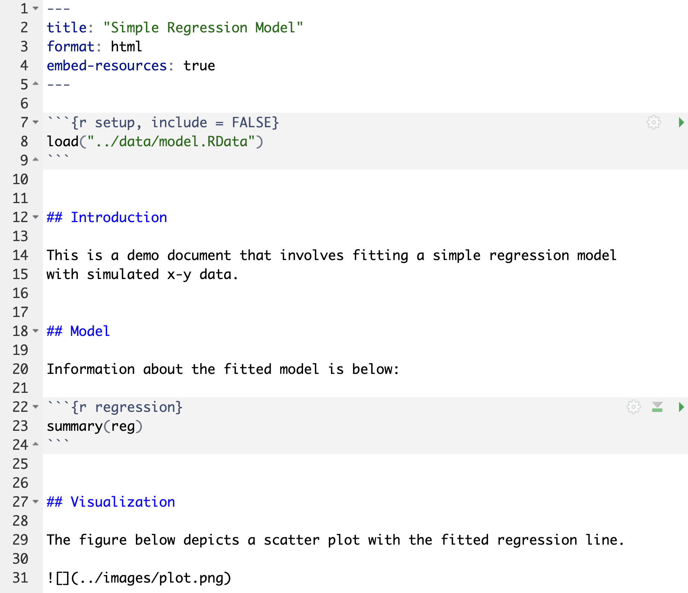
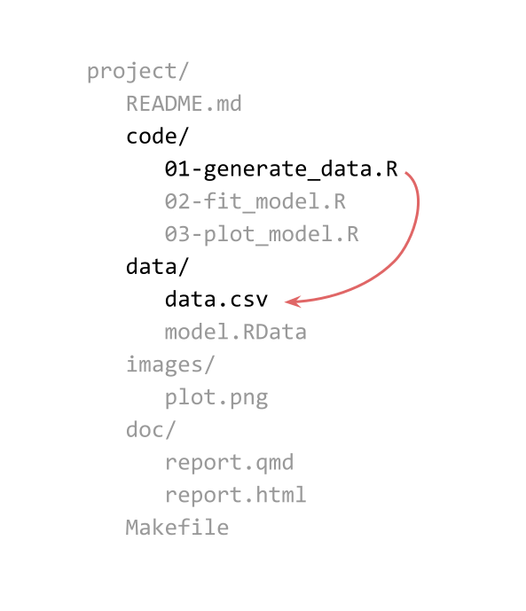

Intro to GNU Make (part 2)
Handling files and directories
Example: Simple Linear Regression
Motivation
Let’s consider a project that involves 3+1 major stages:
Data: Generate x-y data
Model: Fit simple linear regression model \(\hat{y} = b_0 + b_1 x\)
Plot: Graph scatter plot with fitted regression line
Report that incorporates:
- model (from stage 2) and
- plot (from stage 3)
1) Generate Data
x y
1 -1.084058 -0.3723912
2 2.896694 4.9310434
3 1.740009 2.9505747
4 1.190677 0.7951238
5 2.265767 3.2689597
6 -1.479595 -2.55018992) Fit Regression Model
3) Plot Model
3) Plot Model

Files
Code split into 3 R script files
03-plot_model.R
dat = read.csv(file = "data/data.csv")
load(file = "model.RData")
reg_intercept = reg$coefficients[1]
reg_slope = reg$coefficients[2]
gg = ggplot(data = dat, aes(x = x, y = y)) +
geom_point(shape = 20, alpha = 0.7) +
geom_abline(intercept = reg_intercept,
slope = reg_slope,
color = "#4D8FEB") +
theme_bw() +
labs(title = "Simple regression model")
ggsave(filename = "plot.png",
plot = gg, width = 5, height = 5)Report in qmd file

Pipelines: Inputs, Scripts, and Outputs
File Structure (Option A)
Makefile
Makefile
Makefile
Makefile
Makefile
Makefile
.PHONY: all clean
all: data.csv model.RData plot.png report.html
data.csv: 01-generate_data.R
Rscript 01-generate_data.R
model.RData: 02-fit_model.R data.csv
Rscript 02-fit_model.R
plot.png: 03-plot_model.R model.RData
Rscript 03-plot_model.R
report.html: report.qmd model.RData plot.png
quarto render report.qmdMakefile
Makefile
.PHONY: all clean
all: data.csv model.RData plot.png report.html
data.csv: 01-generate_data.R
Rscript 01-generate_data.R
model.RData: 02-fit_model.R data.csv
Rscript 02-fit_model.R
plot.png: 03-plot_model.R model.RData
Rscript 03-plot_model.R
report.html: report.qmd model.RData plot.png
quarto render report.qmd
clean:
rm -f data.csv model.RData plot.png report.htmlA Less Simple File Structure
File Structure (Option B)
Let’s consider an alternative file structure
Files Again
Code split into 3 R script files
03-plot_model.R
dat = read.csv(file = "../data/data.csv")
load(file = "../data/model.RData")
reg_intercept = reg$coefficients[1]
reg_slope = reg$coefficients[2]
gg = ggplot(data = dat, aes(x = x, y = y)) +
geom_point(shape = 20, alpha = 0.7) +
geom_abline(intercept = reg_intercept,
slope = reg_slope,
color = "#4D8FEB") +
theme_bw() +
labs(title = "Simple regression model")
ggsave(filename = "plot.png",
path = "../images",
plot = gg, width = 5, height = 5)Notice the file paths!
Report in qmd file

Makefile Revisited

Makefile rule
- ✅ correct target
- ✅ correct dependency
- ❌ incorrect command